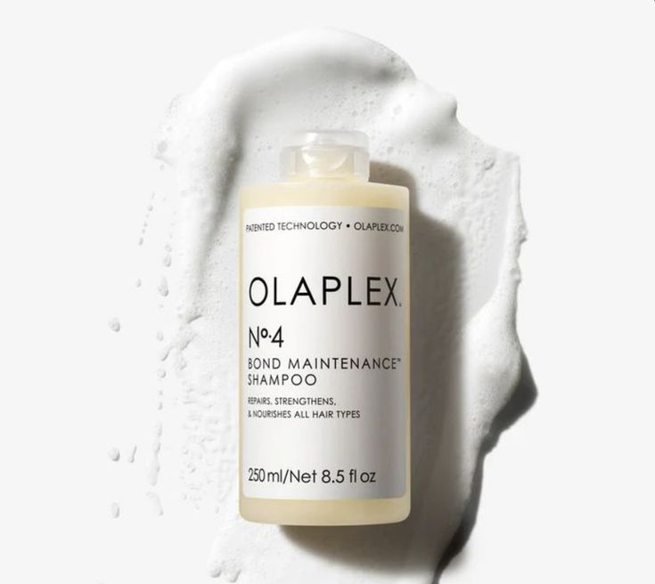

Nema više oštećene kose prilikom farbanja – posvetlite se
Pomaže da se obnove oštećene veze u vlaknu kose, posebno posle farbanja i blanširanja.
Kosa postaje otpornija na fen, peglu i svakodnevno češljanje, pa se manje lomi.
Pogodan je za sve tipove kose, od tanke do guste, i ne opterećuje je.
Pomaže da sjaj i boja traju duže između dva termina u salonu.

Dodaje se direktno u boju ili blanš i štiti veze u kosi dok traje farbanje, pa kosa ostaje jaka čak i kad se posvetljava.
Nanosi se posle ispiranja boje i dodatno učvršćuje i obnavlja vlakno kose, za mekanu i sjajnu kosu.
Nanosi se na vlažnu kosu pre pranja i čuva rezultat tretmana do vašeg sledećeg termina. Za svakodnevno pranje tu je šampon No.4.